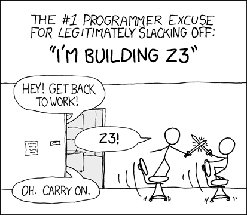

Installation#
Linux / macOS#
Sandboxing
We use esy for dependency management, which sandboxes dependencies. Apart from a few external dependencies (i.e. esy itself), installing Gillian will not affect your environment (including your opam switches)
It should be perfectly safe (and recommended) to install the development environment directly on your machine.
Install prerequisites
On Debian or Ubuntu, run:
sudo apt install git curl npm build-essential pkg-config \ m4 python3-distutils python3-apt
On macOS, make sure you have the XCode command line tools installed:
xcode-select --install…then make sure your development tools are up to date.
Install esy
npm install -g esy
Clone the source repository
Note
If you are evaluating Gillian as an artifact, please use the source code provided to you as part of the artifact submission.
git clone https://github.com/GillianPlatform/Gillian.git
Prepare dependencies and build Gillian
cd Gillian esy install esy build
This may take a while, as esy will install and build sandboxed versions of every dependency, including OCaml and Z3.

Windows#
Gillian is not supported on (native) Windows, but works fine through WSL (more specifically, default Ubuntu on WSL2).
Docker#
You can build a docker image from the source code:
git clone https://github.com/GillianPlatform/Gillian.git
cd Gillian
docker build -t gillian .
Once built, run Gillian with
docker run -it gillian
This will start the container and give you access through a zsh shell.
Inside the container, you’ll find:
The Gillian repository in
/app/GillianOur fork of
Test262in/app/test262Our fork of
Collections-Cin/app/collections-c
Testing your setup#
After installing and building (or entering the docker container), try running the following tests.
Gillian-JS#
esy x gillian-js verify Gillian-JS/Examples/JaVerT/BST.js --silent
Expected output
Obtaining specs to verify. Obtained 5 symbolic tests Running symbolic tests: 0.080211 Verifying one spec of procedure makeNode... Success Verifying one spec of procedure find... Success Verifying one spec of procedure findMin... Success Verifying one spec of procedure remove... Success Verifying one spec of procedure insert... Success All specs succeeded: [Time]
Gillian-C#
esy x gillian-c bulk-exec Gillian-C/examples/concrete
Expected output
Registering tests... Running 1 test suite PASS . Test Suites: 0 failed, 1 passed, 1 total Tests: 0 failed, 6 passed, 6 total Time: [Time]